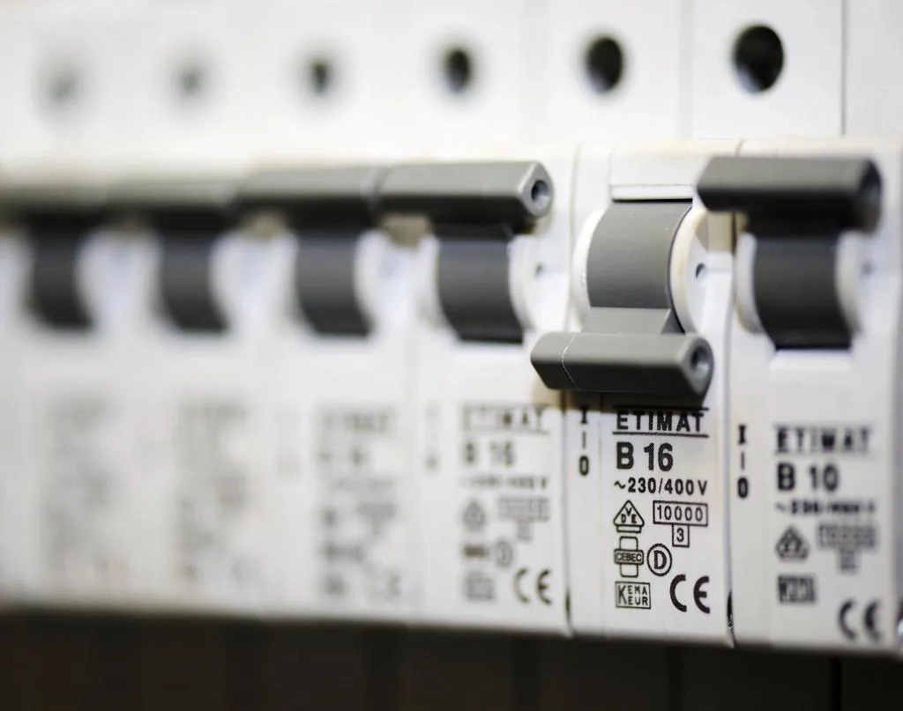
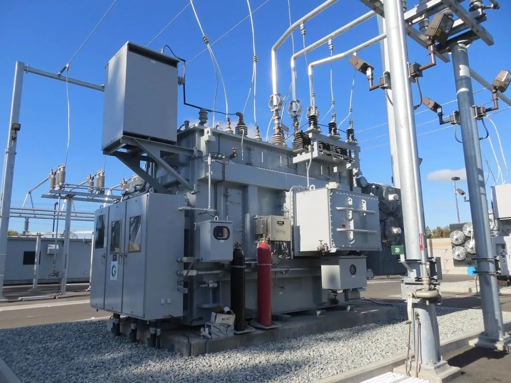

NOM-001-SEDE-2012
Las tablas de la norma, en datos abiertos
Las tablas que usa el programa están en archivos que cualquiera puede revisar, cotejadas contra una captura independiente. El código no tiene valores de la norma escritos a mano.

Funciones
Cada resultado trae su fórmula, los valores sustituidos y el artículo de la norma. Si algo no cumple te dice por qué y cómo corregirlo; si falta un dato, no lo inventa.
Cada paso a la vista
I = P / (V · fp)
I = 1,500 / (127 · 0.90) = 13.12 A
ΔV = 2 · I · L · (R · cos θ + X · sen θ) / n
ΔV = 2 · 13.12 · 0.0350 · (6.6 · 0.90 + 0.223 · 0.436) / 1 = 5.55 V
NOM-001-SEDE-2012: Capítulo 10, Tabla 9
e total = 0.68 + 4.37 = 5.05 %
5.05 % es mayor que el límite de 5.00 %.
NOM-001-SEDE-2012: 210-19(a)(1), nota 4; 215-2(a)(1), nota 2
Cada circuito y alimentador muestra su procedimiento con los valores sustituidos y la tabla o artículo que lo respalda. Es lo mismo que va en la memoria.
Si el calibre lo determinó la ampacidad, la protección o la caída de tensión, lo dice. Si algo no cumple, propone alternativas ya calculadas.
Calcula con precisión completa y solo redondea lo que se muestra. Puedes comprobar cualquier número a mano.
Se calculó con todos sus datos y pasó cada verificación.
C-01: caída de 2.76 % de 3.00 % permitido.
Al menos una verificación falla. Dice cuál y cómo corregirla.
C-04: caída acumulada de 5.05 % de 5.00 %.
Falta un dato o la norma no cubre el caso. Nunca supone un valor.
C-06: falta la corriente de placa del motor para el relevador de sobrecarga.
La aprobación es tuya. IEEStudio verifica contra la norma, pero nunca marca un proyecto como aprobado: esa firma la da el ingeniero responsable.
Lo que entrega

Cada circuito con su carga, corriente, calibre, tierra, tubería, interruptor y caída de tensión, y el alimentador con la carga del artículo 220. Filtra lo que no cumple con un clic.

Acometida, alimentadores, tableros y circuitos con su interruptor, conductores, tubería, caída de tensión y cortocircuito. Cambia un dato y el diagrama se actualiza.


Un PDF con los datos de la obra, los criterios de diseño, el cuadro de cargas, el diagrama unifilar, las observaciones y el procedimiento de cada tramo.

El cálculo rápido te da corriente, interruptor, conductor, tierra, tubería y caída de tensión de un solo circuito, con su hoja en PDF. Si te sirve, lo agregas al proyecto con un clic.
Qué calcula

NOM-001-SEDE-2012
Las tablas que usa el programa están en archivos que cualquiera puede revisar, cotejadas contra una captura independiente. El código no tiene valores de la norma escritos a mano.
Abre la app con el proyecto de ejemplo o empieza el tuyo desde cero.